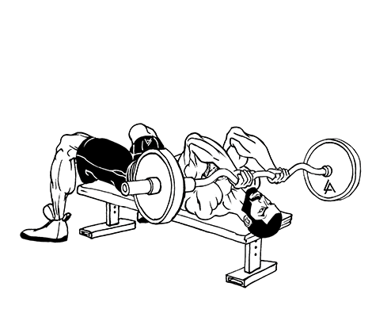
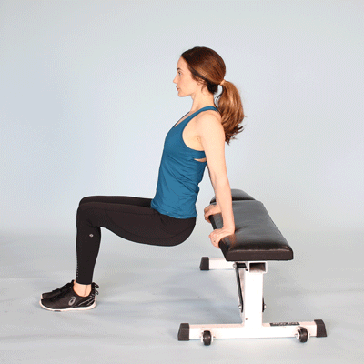

1.Triceps Pushdown
Set the cable machine up with the bar at head height. Grab the bar and stand upright with your back straight and your elbows tucked in to your sides. Stand with your feet hip-width apart, or place one in front of the other if it helps you balance. Pull the cable down until the bar touches your thighs and pause to squeeze your triceps at the bottom of the move. Then slowly raise the bar back to the starting position. Make sure you don’t lean forwards to aid the press and don’t let your elbows leave your sides, otherwise you’ll lose some of the focus on the triceps.
2.Skull Crusher
Hold a dumbbell in each hand and lie faceup on an exercise mat (or bench) with knees bent and feet flat on the floor.Extend arms above the chest with palms facing each other. Engage glutes and pull the rib cage down to prevent arching the low back. Tucking elbows in and pressing shoulders down, slowly bend elbows to lower the dumbbells about an inch above the forehead on either side of the head. Avoid moving upper arms and anchor shoulders down to engage the lats, isolating the triceps as the weights lower.
3.Reverse Dips
Sit on your chair or bench with your arms at your side and your feet flat on the floor, hip distance apart.Position your hands so that your palms are down beside your hips. Your fingers should grip the front of the chair seat. Move your torso forward off the chair with your arms extended. Your buttocks should hover over the floor and your knees should be slightly bent. Your heels should touch the floor a few inches in front of your knees.Breathe in as you slowly lower your body, hinging at the elbows until each forms a 90-degree angle.Breathe out as you push up to your starting position with your arms fully extended.